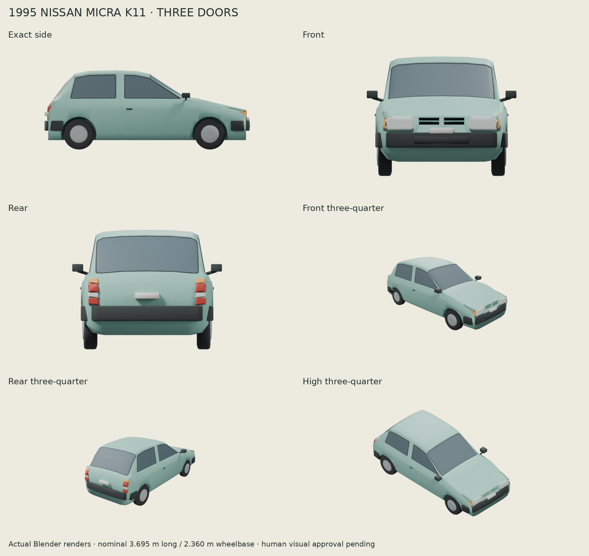
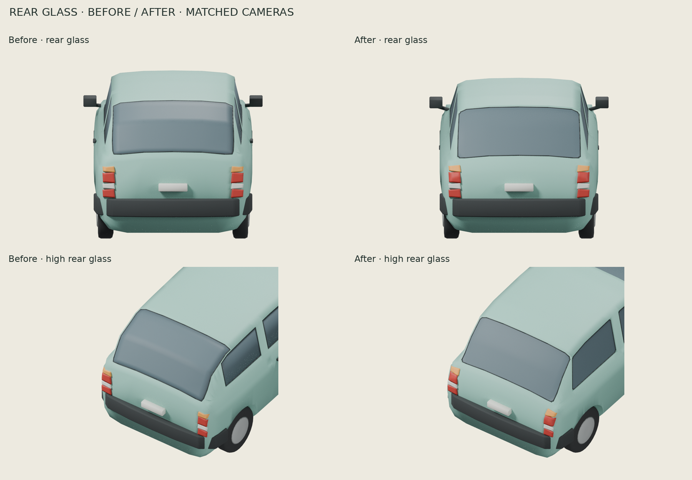
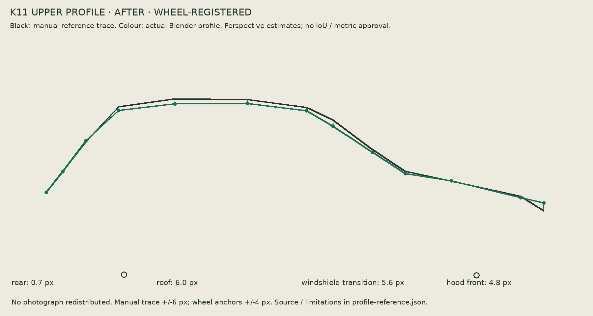
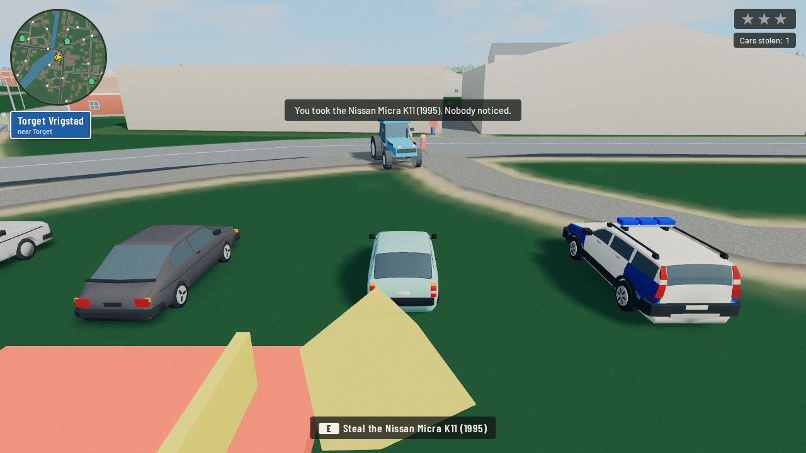
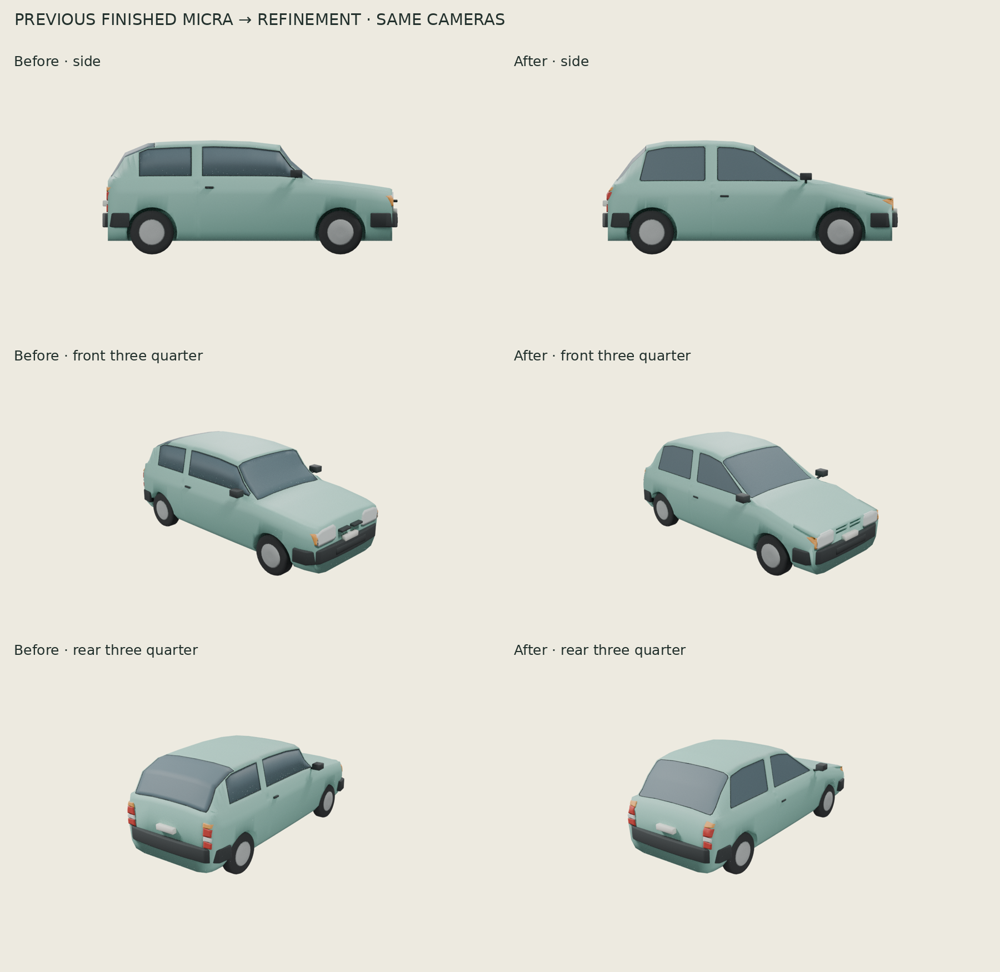

European three-door, pre-facelift. Refined two-box silhouette, swept three-door glazing and corrected rear glass. Visual approval pending.



Before comparison · Perspective/manual estimates, not an exact orthographic certificate.


The game link uses files on this branch; it is not a claim that main or the public game has been updated. References and uncertainties.